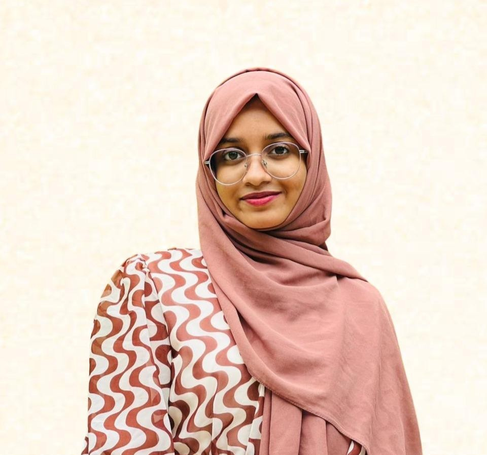
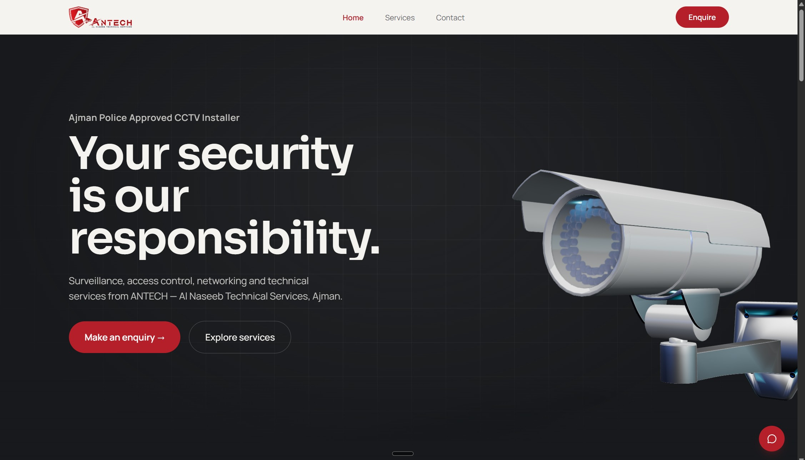
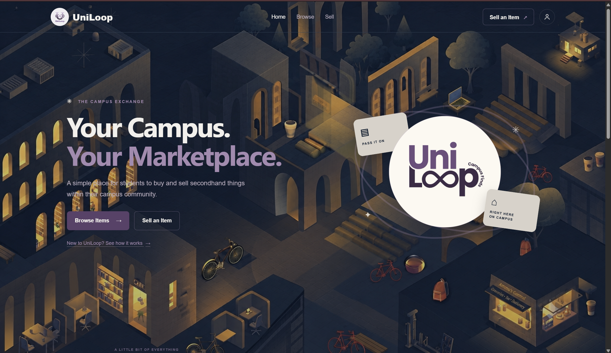
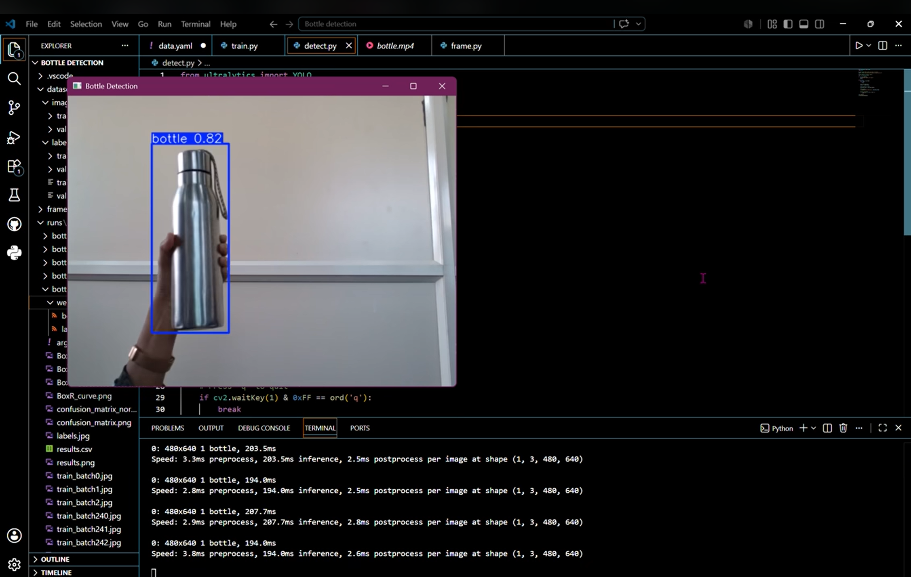
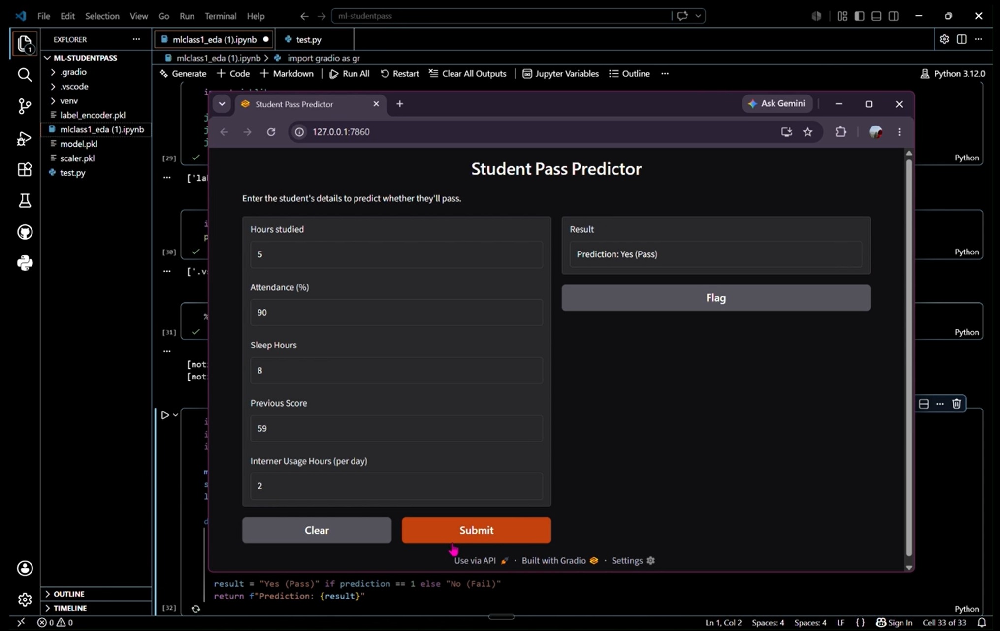
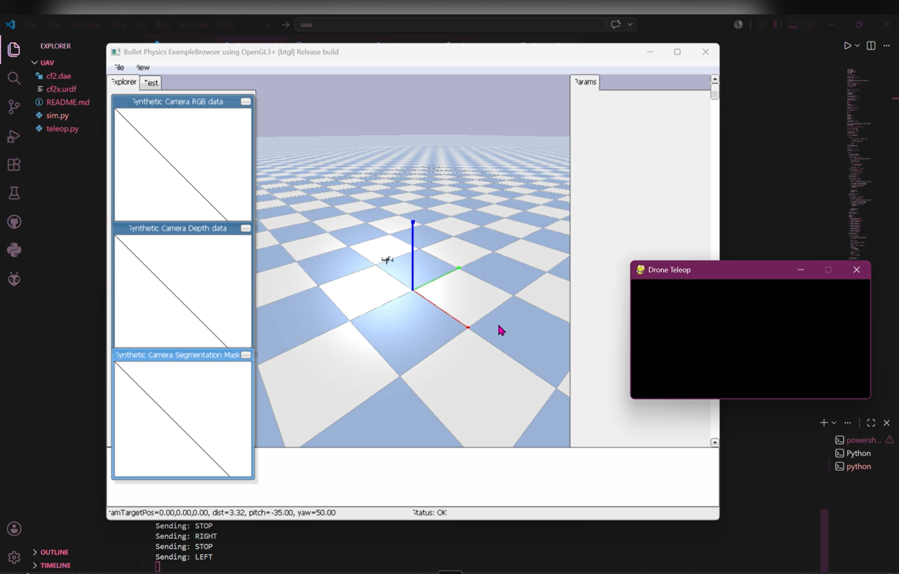
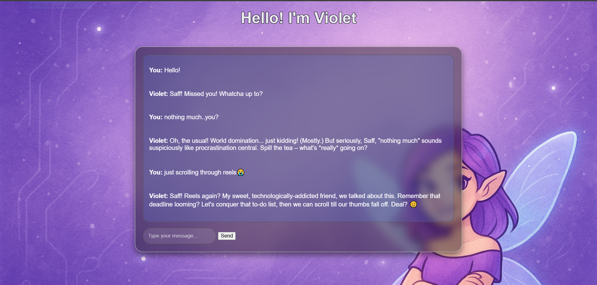

Programming
My foundation for thinking through problems and building solutions.
Hi, I'm Safa.
I'm studying computer science and enjoy solving problems, building software and exploring practical uses for AI.

I'm pursuing a B.Tech in Computer Science at Saintgits College of Engineering. I enjoy understanding how things work, solving programming problems and turning ideas into functional projects.
My interests span software development, machine learning, computer vision and robotics. I like exploring different technologies while building a stronger foundation in computer science.
Right now, I'm growing my skills through hands-on projects and looking for opportunities to learn from real engineering teams.
GitHub profileMy foundation for thinking through problems and building solutions.
Building applications with backend logic and database integration.
Experimenting with models, computer vision and data-driven systems.
Exploring simulation, robot control and development workflows.

Screenshot not provided project-1.jpg
Designed and developed a modern website for a security solutions business, featuring a product-focused hero section, smooth animations and responsive layouts.

Screenshot not provided project-2.png
A student platform for campus listings and requests, with authentication, database integration and an admin dashboard.

Screenshot not provided project-3.png
Trained a custom YOLOv8 bottle-detection model using an annotated dataset and explored real-time detection with OpenCV.

Screenshot not provided project-4.png
A machine-learning project exploring how study habits, attendance and other input features relate to student outcomes.

Screenshot not provided project-5.png
A PyBullet-based UAV simulator with keyboard teleoperation, socket-based communication, smooth velocity control, autonomous orbit maneuvers and PID-based altitude hold.

Screenshot not provided project-6.png
A personality-driven chatbot interface with a custom visual identity, designed to make a digital conversation feel more engaging.
An autonomous robot that uses an ultrasonic sensor to detect obstacles and navigate around them. Built as part of my AT Bots internship.
Explore Code Watch Project Demo on LinkedInA simple graphical calculator developed using Python and Tkinter.
Explore CodeA separate ROS 2-based project for robot communication, control and keyboard teleoperation experiments.
Explore CodeSaintgits College of Engineering
Current CGPA 9.25 / 10Sacred Heart Higher Secondary School, Fathimapuram
95.5%Sacred Heart Higher Secondary School, Fathimapuram
90%AT Bots
Worked on machine learning and computer vision workflows, YOLOv8 object detection, an ESP32 obstacle-avoiding robot, and introductory ROS 2 and UAV simulation experiments.
RETECHNOX · NIT Calicut Tathva · RoboIgnite
Participated in learning experiences covering data science, AI, robotics and hands-on engineering concepts.
AT Bots 2026
RETECHNOX Technologies 2025
Tathva, NIT Calicut 2025
IEEE RAS SBC RIT 2025
LetsUpgrade 2025
Codecademy 2023
100/100.
Awarded a CISCE Certificate of Merit for scoring full marks in Computer Science in the ISC examination.
I'm interested in software engineering and AI/ML internships where I can learn and contribute. Feel free to get in touch.
Email me